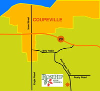

RoseHip Farm & Garden was started in 1999 by owners Linda Bartlett and Valerie Reuther. Formerly a plant nursery with a destination display garden, RoseHip features beautiful flowers surrounded by stunning trees, shrubs and perennials where diversity and color abound.
Set on a historic property within Ebey’s Landing National Historic Reserve with the house and barn dating from the 1890’s, the gardens are an oasis of beauty and biodiversity where bees, birds, plants and people thrive. Our mission is to grow delicious and nutritious food and flowers in a manner that closely mimics Mother Nature with respect and stewardship of the land and those who work it.
 Linda Bartlett |
 Location Click to enlarge |
 Valerie Reuther |
{kind=link}
RoseHip has gone through some fundamental changes recently, and the produce we once enjoyed sharing with the community is currently not available. RoseHip will continue to act as a place to take in the smells and sights of blooming flowers, so feel free to stop by when you see our sign on the roadway. Thanks for continuing to engage with this slice of Whidbey and stay tuned for what's in store!